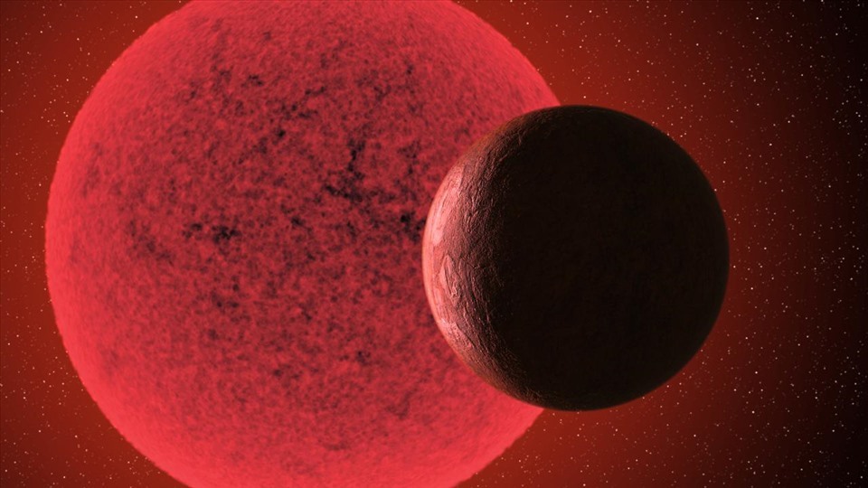

SAO LÙN ĐỎ
ĐỊNH NGHĨA
Các sao lùn đỏ là những ngôi sao có khối lượng rất thấp chưa bằng 40% khối lượng Mặt Trời.[1] Vì thế chúng có nhiệt độ lõi thấp và năng lượng được tạo ra ở tỷ lệ thấp bằng phản ứng tổng hợp hạt nhân của hydro thành heli qua cơ cấu dãy proton-proton (PP). Vì thế những ngôi sao đó phát ra lượng ánh sáng thấp, thỉnh thoảng chỉ bằng 1/10.000 lượng ánh sáng Mặt Trời. Thậm chí những ngôi sao lùn đỏ lớn nhất cũng chỉ có độ sáng bằng 10% của Mặt Trời.[2] Nói chung các ngôi sao lùn đỏ chuyển năng lượng từ lõi ra bề mặt bằng cách đối lưu. Đối lưu xảy ra bởi tính đục (opacity) của bên trong, vốn có mật độ khá cao so với nhiệt độ. Vì thế, các photon khó di chuyển ra bề mặt hơn bởi các quá trình bức xạ. Đối lưu là phương pháp chuyển năng lượng chủ yếu bởi nó là quá trình có hiệu năng cao hơn.[3]

Các sao lùn đỏ là những ngôi sao có khối lượng rất thấp chưa bằng 40% khối lượng Mặt Trời.[1] Vì thế chúng có nhiệt độ lõi thấp và năng lượng được tạo ra ở tỷ lệ thấp bằng phản ứng tổng hợp hạt nhân của hydro thành heli qua cơ cấu dãy proton-proton (PP). Vì thế những ngôi sao đó phát ra lượng ánh sáng thấp, thỉnh thoảng chỉ bằng 1/10.000 lượng ánh sáng Mặt Trời. Thậm chí những ngôi sao lùn đỏ lớn nhất cũng chỉ có độ sáng bằng 10% của Mặt Trời.[2] Nói chung các ngôi sao lùn đỏ chuyển năng lượng từ lõi ra bề mặt bằng cách đối lưu. Đối lưu xảy ra bởi tính đục (opacity) của bên trong, vốn có mật độ khá cao so với nhiệt độ. Vì thế, các photon khó di chuyển ra bề mặt hơn bởi các quá trình bức xạ. Đối lưu là phương pháp chuyển năng lượng chủ yếu bởi nó là quá trình có hiệu năng cao hơn.[3]

ĐẶC ĐIỂM
Vì các ngôi sao lùn đỏ đối lưu toàn bộ, heli không tích tụ được tại lõi nên chúng có thể đốt cháy một phần lớn lượng hydro trước khi dời khỏi dãy chính so với những ngôi sao lớn hơn như Mặt Trời. Vì thế những ngôi sao lùn đỏ có tuổi thọ ước tính rất lớn; từ hàng chục tỷ tới hàng nghìn tỷ năm tùy theo khối lượng. Tuổi thọ này lớn hơn tuổi thọ ước tính của vũ trụ. Sao lùn đỏ có khối lượng càng thấp, tuổi thọ càng cao.[1] Khi khối lượng hydro trong một ngôi sao lùn đỏ đã tiêu thụ hết, tỷ lệ phản ứng giảm sút và lõi bắt đầu thu nhỏ lại. Năng lượng hấp dẫn sinh ra bởi sự giảm sút kích thước này được chuyển thành nhiệt, và lại được mang đi lên bề mặt ngôi sao bởi sự đối lưu.[4] Sự thực rằng các ngôi sao lùn đỏ và các ngôi sao có khối lượng thấp khác vẫn ở trên dãy chính trong khi những ngôi sao lớn khác lại bị loại cho phép ước tính tuổi của các cụm sao bằng cách tìm khối lượng tại đó các ngôi sao ra khỏi dãy chính. Việc này đưa ra một giới hạn tuổi sao thấp hơn cho Vũ trụ và cũng cho phép lập các bảng thời gian của các kết cấu bên trong Ngân hà, là quầng ngân hà và đĩa ngân hà. Một bí ẩn vẫn chưa được giải đáp ở thời điểm năm 2007 là sự vắng mặt của những ngôi sao lùn đỏ không có kim loại. (Trong thiên văn học, một kim loại là bất kỳ nguyên tố nào nặng hơn hydro hay heli). Mô hình Big Bang tiên đoán thế hệ sao đầu tiên chỉ được có hydro, heli và dấu hiệu của một số lithium. Nếu những ngôi sau như vậy gồm cả các ngôi sao lùn đỏ, chúng vẫn phải được quan sát thấy hiện nay, nhưng chưa từng một ngôi sao nào như vậy được khám phá. Giải thích có vẻ đúng nhất là khi không có các nguyên tố nặng chỉ những ngôi sao lớn và chưa được quan sát thấy có thể hình thành, và chúng nhanh chóng cháy hết để lại các nguyên tố nặng để sau đó cho phép hình thành nên các ngôi sao lùn đỏ. Những giải thích khác, như các ngôi sau lùn đỏ không kim loại rất mờ và có thể có số lượng nhỏ, được coi là khó có thể xảy ra bởi chúng có vẻ mâu thuẫn với các mô hình tiến hóa sao.
Vì các ngôi sao lùn đỏ đối lưu toàn bộ, heli không tích tụ được tại lõi nên chúng có thể đốt cháy một phần lớn lượng hydro trước khi dời khỏi dãy chính so với những ngôi sao lớn hơn như Mặt Trời. Vì thế những ngôi sao lùn đỏ có tuổi thọ ước tính rất lớn; từ hàng chục tỷ tới hàng nghìn tỷ năm tùy theo khối lượng. Tuổi thọ này lớn hơn tuổi thọ ước tính của vũ trụ. Sao lùn đỏ có khối lượng càng thấp, tuổi thọ càng cao.[1] Khi khối lượng hydro trong một ngôi sao lùn đỏ đã tiêu thụ hết, tỷ lệ phản ứng giảm sút và lõi bắt đầu thu nhỏ lại. Năng lượng hấp dẫn sinh ra bởi sự giảm sút kích thước này được chuyển thành nhiệt, và lại được mang đi lên bề mặt ngôi sao bởi sự đối lưu.[4] Sự thực rằng các ngôi sao lùn đỏ và các ngôi sao có khối lượng thấp khác vẫn ở trên dãy chính trong khi những ngôi sao lớn khác lại bị loại cho phép ước tính tuổi của các cụm sao bằng cách tìm khối lượng tại đó các ngôi sao ra khỏi dãy chính. Việc này đưa ra một giới hạn tuổi sao thấp hơn cho Vũ trụ và cũng cho phép lập các bảng thời gian của các kết cấu bên trong Ngân hà, là quầng ngân hà và đĩa ngân hà. Một bí ẩn vẫn chưa được giải đáp ở thời điểm năm 2007 là sự vắng mặt của những ngôi sao lùn đỏ không có kim loại. (Trong thiên văn học, một kim loại là bất kỳ nguyên tố nào nặng hơn hydro hay heli). Mô hình Big Bang tiên đoán thế hệ sao đầu tiên chỉ được có hydro, heli và dấu hiệu của một số lithium. Nếu những ngôi sau như vậy gồm cả các ngôi sao lùn đỏ, chúng vẫn phải được quan sát thấy hiện nay, nhưng chưa từng một ngôi sao nào như vậy được khám phá. Giải thích có vẻ đúng nhất là khi không có các nguyên tố nặng chỉ những ngôi sao lớn và chưa được quan sát thấy có thể hình thành, và chúng nhanh chóng cháy hết để lại các nguyên tố nặng để sau đó cho phép hình thành nên các ngôi sao lùn đỏ. Những giải thích khác, như các ngôi sau lùn đỏ không kim loại rất mờ và có thể có số lượng nhỏ, được coi là khó có thể xảy ra bởi chúng có vẻ mâu thuẫn với các mô hình tiến hóa sao.
KHẢ NĂNG SINH SỐNG
Khả năng sinh sống trên hành tinh của các hệ sao lùn đỏ là chủ đề của một số cuộc tranh cãi.[cần dẫn nguồn] Dù chúng có số lượng lớn, và có tuổi thọ dài, có nhiều yếu tố có thể khiến cuộc sống khó duy trì trên những hành tinh quay quanh một ngôi sao lùn đỏ. Thứ nhất, các hành tinh ở vùng có thể sinh sống của một sao lùn đỏ phải gần ngôi sao mẹ ở mức dường như sẽ bị khóa thủy triều. Điều này khiến một phía bề mặt sẽ luôn là ban ngày còn phía kia là đêm đen vĩnh cửu. Nó cũng tạo ra những sự khác biệt nhiệt độ to lớn giữa hai phía bề mặt. Những điều kiện như vậy có lẽ sẽ khiến cuộc sống (như chúng ta biết) khó phát triển.[cần dẫn nguồn] Mặt khác, những lý thuyết gần đây cho rằng hoặc một khí quyển dày hay một đại dương có thể chuyển nhiệt độ quanh một hành tinh như vậy. Một vấn đề tiềm tàng khác là các ngôi sao lùn đỏ phát ra đa số bức xạ ở dạng ánh sáng hồng ngoại, trong khi cây cối trên Trái Đất sử dụng phần lớn năng lượng ở dạng quang phổ nhìn thấy được. Nhưng, có lẽ vấn đề nghiêm trọng nhất là sự biến đổi sao. Những ngôi sao lùn đỏ thường bị bao phủ bởi các vết đen, làm giảm lượng phát xạ tới 40% trong nhiều tháng ở mỗi lần xuất hiện. Những thời điểm khác, một số sao lùn đỏ, được gọi là các sao lóe bùng, có thể phát ra những lóe bùng lớn, tăng gấp đôi lượng ánh sáng phát ra trong ít phút. Sự biến đổi này cũng khiến dạng cuộc sống như chúng ta biết khó tồn tại gần một sao lùn đỏ. Gibor Basri thuộc Đại học California, Berkeley tuyên bố một hành tinh trên quỹ đạo gần một sao lùn đỏ có thể giữ được khí quyển cả khi ngôi sao lóe bùng.
Khả năng sinh sống trên hành tinh của các hệ sao lùn đỏ là chủ đề của một số cuộc tranh cãi.[cần dẫn nguồn] Dù chúng có số lượng lớn, và có tuổi thọ dài, có nhiều yếu tố có thể khiến cuộc sống khó duy trì trên những hành tinh quay quanh một ngôi sao lùn đỏ. Thứ nhất, các hành tinh ở vùng có thể sinh sống của một sao lùn đỏ phải gần ngôi sao mẹ ở mức dường như sẽ bị khóa thủy triều. Điều này khiến một phía bề mặt sẽ luôn là ban ngày còn phía kia là đêm đen vĩnh cửu. Nó cũng tạo ra những sự khác biệt nhiệt độ to lớn giữa hai phía bề mặt. Những điều kiện như vậy có lẽ sẽ khiến cuộc sống (như chúng ta biết) khó phát triển.[cần dẫn nguồn] Mặt khác, những lý thuyết gần đây cho rằng hoặc một khí quyển dày hay một đại dương có thể chuyển nhiệt độ quanh một hành tinh như vậy. Một vấn đề tiềm tàng khác là các ngôi sao lùn đỏ phát ra đa số bức xạ ở dạng ánh sáng hồng ngoại, trong khi cây cối trên Trái Đất sử dụng phần lớn năng lượng ở dạng quang phổ nhìn thấy được. Nhưng, có lẽ vấn đề nghiêm trọng nhất là sự biến đổi sao. Những ngôi sao lùn đỏ thường bị bao phủ bởi các vết đen, làm giảm lượng phát xạ tới 40% trong nhiều tháng ở mỗi lần xuất hiện. Những thời điểm khác, một số sao lùn đỏ, được gọi là các sao lóe bùng, có thể phát ra những lóe bùng lớn, tăng gấp đôi lượng ánh sáng phát ra trong ít phút. Sự biến đổi này cũng khiến dạng cuộc sống như chúng ta biết khó tồn tại gần một sao lùn đỏ. Gibor Basri thuộc Đại học California, Berkeley tuyên bố một hành tinh trên quỹ đạo gần một sao lùn đỏ có thể giữ được khí quyển cả khi ngôi sao lóe bùng.